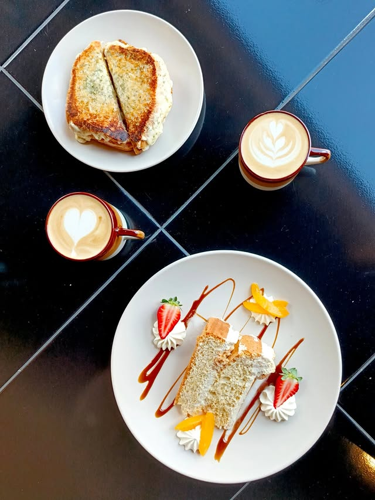

Donde el café
es un arte
Una cafetería de especialidad con alma propia. Café de especialidad seleccionado, pastelería artesanal y un espacio de encuentro para nuestra tribu.
#74 Las 100 Mejores Cafeterías de Sudamérica 2025Somos más
que café
SOMOS nació de la mano de Andrés y Ale — dos apasionados del buen café que soñaban con un espacio donde la especialidad, el arte y la comunidad convivieran bajo el mismo techo en Sucre.
"Yo le llamo arte a todo aquello que de alguna manera nos devuelve la vida"
Lo que empezó como un sueño se convirtió en un refugio para los creativos y amantes del buen café en nuestra ciudad — donde cada taza de especialidad y cada pieza de pastelería artesanal son una excusa perfecta para quedarse un poco más.

Andrés y Ale te cuentan nuestra historia
El laboratorio de café
Servimos exclusivamente café de especialidad. Cada método de extracción revela facetas aromáticas y notas únicas del grano.

Extracción V60
Filtrado cónico de precisión en ángulo de 60°. Diseñado para resaltar la acidez brillante, notas florales y la máxima claridad aromática en una taza limpia y ligera.
La pastelería de obrador
Cada pieza sale de nuestro propio horno con mantequilla de primera, fermentación lenta y dedicación artesanal diaria.

Croissant Tradicional
Hojaldrado crujiente con 72 horas de reposo en frío y mantequilla pura. Textura alveolar ligera y aroma envolvente.

Pain au Chocolat
Masa hojaldrada rellena con barras dobles de chocolate semiamargo 65% cacao nacional. El balance perfecto entre crocancia y cacao.

Tartas & Cinnamon Rolls
Rollos glaseados con canela aromática de Ceilán, tartas de frutas de estación y pastelería que rota según la temporada.
Nuestra galería
Un vistazo a los momentos, texturas y personas que dan vida a SOMOS cada día.


SOMOS en cifras
Ven a visitarnos
Nos encantaría verte por aquí. Ven a conocernos, prueba nuestro café y deja que la pastelería hable por sí misma.
Sucre, Bolivia